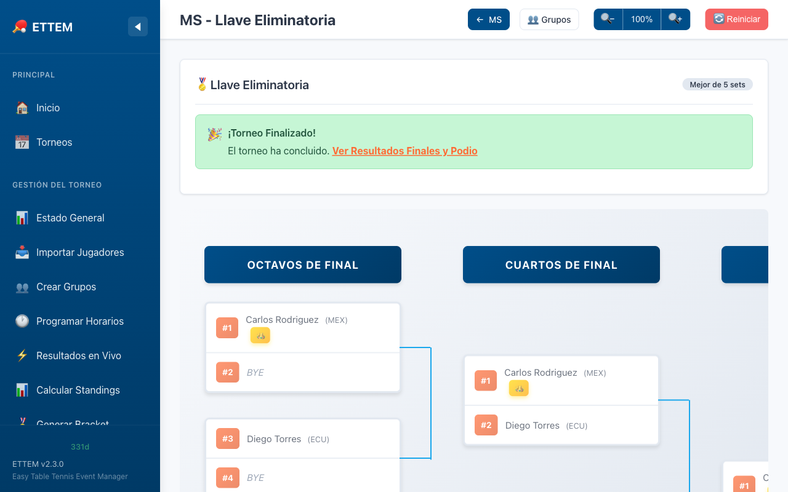

Bracket (Llave)
Eliminación directa: generación automática, modo manual y KO Directo sin fase de grupos.
Acerca del Bracket
El bracket es la fase de eliminación directa (KO) que sigue a la fase de grupos. ETTEM genera la llave automáticamente a partir de los standings finales siguiendo las reglas ITTF de colocación, o permite ajustarla manualmente con validaciones incorporadas.

Modos de Bracket
ETTEM ofrece dos modos para generar la llave de eliminación:
Modo Automático (ITTF)
ETTEM coloca automáticamente a los clasificados en la llave siguiendo las reglas de siembra de la ITTF:
- Mitad superior: el mejor primer lugar de todos los grupos ocupa la posición 1 (cabeza de serie) en el extremo superior del bracket.
- Mitad inferior: el segundo mejor primer lugar va al extremo inferior del bracket (posición opuesta).
- Segundos lugares: se colocan en la mitad opuesta al primer lugar de su propio grupo, garantizando que clasificados del mismo grupo no se puedan enfrentar hasta las semifinales o finales.
- El resto de las posiciones se asignan por ranking de standings para equilibrar la llave.
Modo Manual (Drag & Drop)
Si necesitas ajustar la colocación, puedes arrastrar y soltar jugadores entre posiciones del bracket. ETTEM valida cada movimiento en tiempo real:
- Validación de mitades: ETTEM impide colocar a dos jugadores del mismo grupo en la misma mitad del bracket. Si intentas hacerlo, verás un aviso de error.
- Advertencia de compatriotas: si dos jugadores del mismo país quedarían en la misma primera ronda, ETTEM muestra una advertencia (aunque permite continuar, ya que no es una regla obligatoria).
- Puedes deshacer cualquier movimiento regresando al modo automático y regenerando la llave.
Ingresar Resultados del Bracket
Los resultados de los partidos del bracket se ingresan exactamente igual que los de la fase de grupos: haz clic en el partido, ingresa el marcador set por set y guarda. El ganador avanza automáticamente a la siguiente ronda.
- El formato de partido (Bo3, Bo5, Bo7) se configura por categoría.
- Las reglas de validación ITTF aplican igual que en grupos (mánimo 11 puntos, diferencia de 2, etc.).
- Al completar la final, ETTEM registra al campeón y genera el certificado correspondiente.
KO Directo (sin fase de grupos) Nuevo V2.4
ETTEM V2.4 introduce el formato de KO Directo: un torneo de eliminación directa que omite completamente la fase de grupos Round Robin. Es ideal para torneos rápidos, play-offs o competencias con pocos jugadores y poco tiempo.
Cómo funcionar el KO Directo
- Importar jugadores como de costumbre (CSV o manualmente). No es necesario ningún cambio en el archivo CSV.
- En la configuración de la categoría, selecciona el formato “KO Directo” en lugar de “Grupos + Bracket”.
- ETTEM genera directamente la llave de eliminación con todos los jugadores importados, usando su ranking como criterio de siembra.
- Ingresa los resultados partido a partido hasta coronar al campeón.
ranking_pts del
CSV. El jugador con mayor puntaje es la cabeza de serie 1, el segundo es la cabeza
de serie 2 (en el extremo opuesto), y así sucesivamente siguiendo el criterio
clásico de llaves por ranking.
Diferencias con el bracket normal
| Aspecto | Grupos + Bracket | KO Directo Nuevo V2.4 |
|---|---|---|
| Fase de grupos | Índice Round Robin | No hay — va directo al bracket |
| Siembra | Basada en standings de grupos | Basada en ranking_pts del CSV |
| Partidos por jugador | Mínimo: partidos de grupo + rondas KO | Solo los partidos KO (1 derrota = eliminado) |
| Ingreso de resultados | Igual que grupos | Igual que bracket normal |
| Uso típico | Torneos de un día completo | Play-offs, torneos express, pocos jugadores |